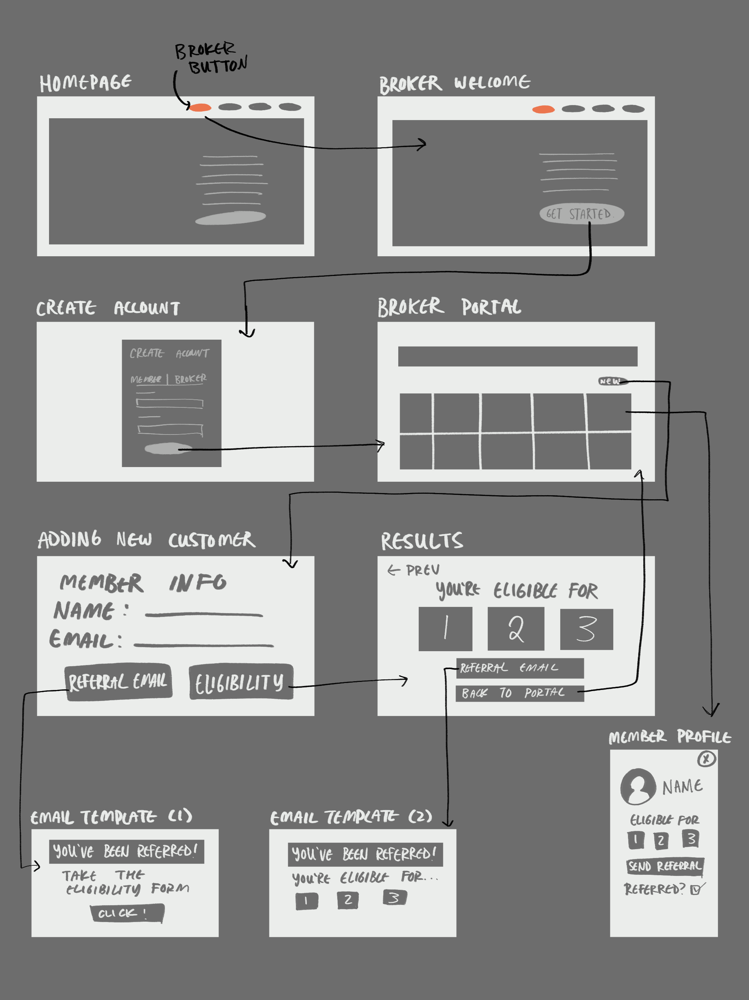
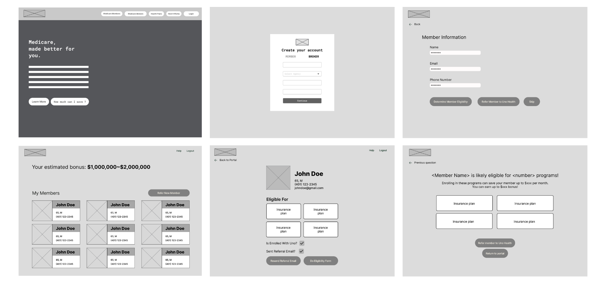
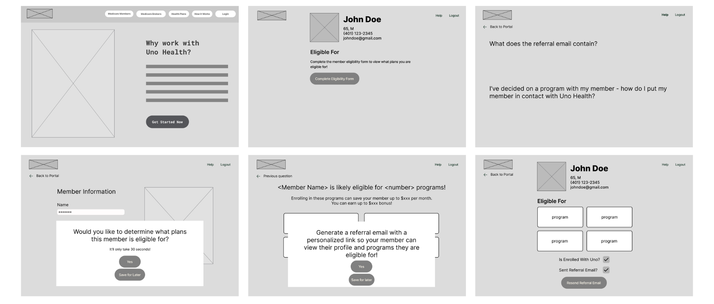
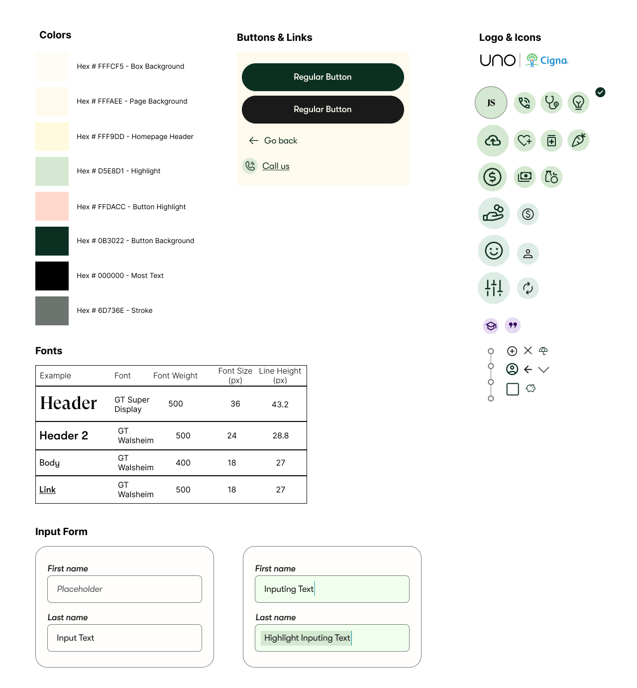
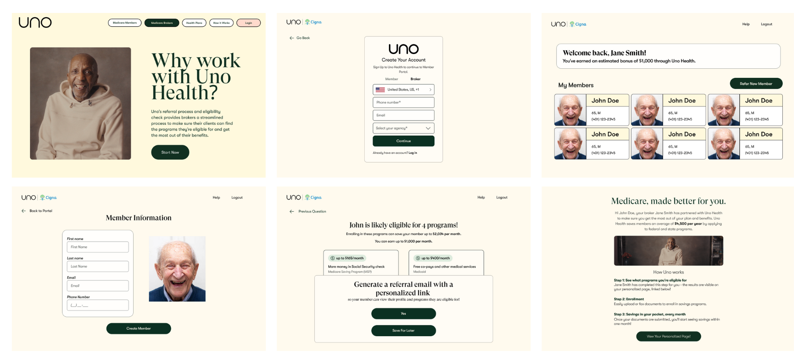

Uno Health: Broker Homepage
Context
Myself and a team of 3 other students were approached by Uno Health, an organisation aimed to determining clients’ eligibility for medical assistance programs, specifically targeted towards an older (65+) audience. They were specifically looking for a means to cater towards medical brokers, who play an integral role in enrolling people in medical programs.Sketching
We first brainstormed ways in which to streamline the process in which medical brokers could refer and register their clients to Uno Health while incorporating all relevant key functionalities.


Initial Wireframes
In order to better integrate medical brokers into the enrollment process, we decided to design a separate page and system for them. Doing so allowed the medical broker to have their own custom login and portal that can track all of the clients they have recommended to Uno Health, their eligibility, and how to assist them in the enrollment process. We also wanted to help implement an easy way for medical brokers to refer clients via creating an automated email system that sent pre-generated referral emails at the broker's request.

After some critique about flow and ease of use, we put our designs into Figma as a low-fidelity wireframe.


Mid-Project Critique
Our point of contact at Uno encouraged us to consider the various edge cases in which the broker would be determining a client's eligibility: would they fill out the form themselves? Would they ask the client to fill it out on their own? Would they be on call with them and fill it out at the same time?
Visual Style Guide and High-Fidelity Prototype
While further developing our designs, we created a style guide based off of the pre-existing Uno Health platform.

I helped adapt our design in order to incorporate the many needs of the brokers while considering the broker-member relationship, and the technical needs they would have while navigating this platform.

Our final high fidelity iteration, as well as the previous wireframes, can be viewed on Figma. Additionally, a walkthrough of this member portal can be seen here.
Reflection
Through research and group brainstorming, this project encouraged me think intentionally about the specific needs of a medical broker and how to adapt a pre-existing website to cater towards their needs. It's important to acknowledge that every product has a unique audience with a specialized set of needs and desires, and it's important for me as a designer to research and provide them.